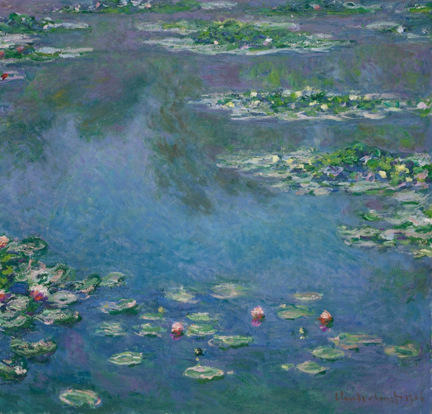

Water Lilies
Claude Monet · 1906
Let your eye float between the lilies. Where does the water become a reflection of the sky?
About this work
Oil on canvas
There is no horizon to settle the scene. Lilies, reflected light, and small touches of paint offer different places for the eye to rest.
Art Institute of Chicago · CC0 ↗